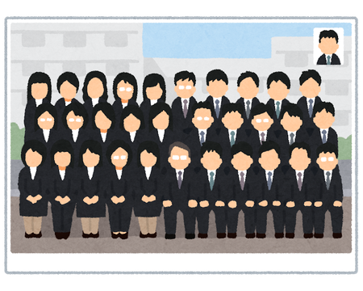
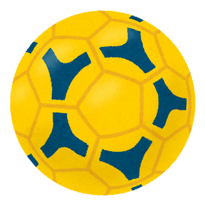
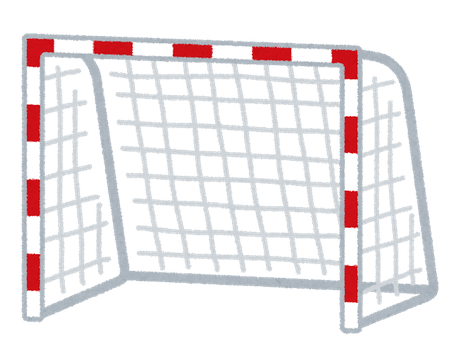

青葉から未来へ！
仲間とボールをつなぐ
青葉ハンドボールスポーツ少年団は、青葉市および近隣地域の子どもたちが集まり、元気に活動しているスポーツ少年団です。
競技の楽しさを知ることはもちろん、チームスポーツを通じて仲間を思いやる心や礼儀、挑戦する姿勢を大切に育んでいます。

活動理念と指導方針
スポーツを通じた心身の健全育成
ハンドボールの技術向上はもちろん、挨拶・礼儀・感謝の気持ちといった人間性の育成を重視しています。仲間とともに助け合い、壁を乗り越える強い心を育てます。

「走る・跳ぶ・投げる」総合的な運動能力の育成
ハンドボールは運動の三大要素がすべて詰まったスポーツです。幼少期・ゴールデンエイジ期において、偏りのないバランスの良い運動神経と体幹を鍛えます。
チーム概要
| チーム名称 | 青葉ハンドボールスポーツ少年団（アオバハンドボールスポーツショウネンダン） |
|---|---|
| 創設 | 2018年4月 |
| 代表・指導スタッフ |
代表：青木 健太（日本スポーツ協会公認指導員） 監督：佐々木 翼（公認ハンドボールコーチ） コーチ：佐藤 大樹、高橋 翔太 ほか |
| 活動拠点 | 架空県青葉市 および 周辺公共スポーツ施設 |
| 主な練習場所 |
・青葉市総合体育館（青葉市青葉町1-2-3） ・青葉第一中学校体育館（青葉市緑町4-5-6） ・中央スポーツセンター（青葉市中央7-8-9） ※体育館の予約状況や試合スケジュールにより週ごとに会場が異なります。 |
| 対象カテゴリー |
・U-9（小学生 1〜3年生） ・U-12（小学生 4〜6年生） ・U-15（中学生 1〜3年生） |
| 活動日時 |
土曜日・日曜日・祝日（主な活動日 9:00〜12:00 または 13:00〜16:00） 水曜日・金曜日夜間練習（18:30〜20:30） ※詳しい日時・場所は「活動日程」をご確認ください。 |
活動紹介

実践ゴール練習
丁寧なコーチング指導
ハンドボールの魅力とは？
スピードと迫力、そしてチームワーク！
「空中の格闘技」とも呼ばれるハンドボールは、ダイナミックなジャンプシュート、スピーディな攻防の切り替えが最大の魅力です。得点シーンが多く、全員が攻撃にも守備にも参加するため、どの子も主役になれる楽しさがあります。